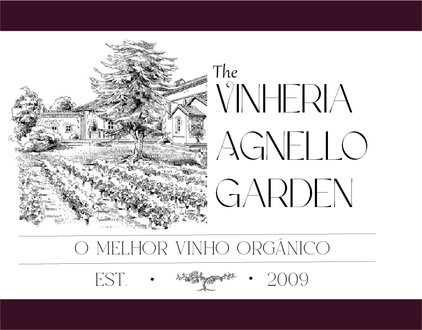

Sobre Nós

A Vinheria Agnello iniciou suas atividades em São Paulo há mais de 15 anos, contando com apenas uma loja física onde coloca à disposição do mercado uma vasta gama de rótulos de vinícolas nacionais e internacionais.
A Vinheria Agnello iniciou suas atividades em São Paulo há mais de 15 anos, contando com apenas uma loja física onde coloca à disposição do mercado uma vasta gama de rótulos de vinícolas nacionais e internacionais.

A Vinheria Agnello é uma empresa familiar, dirigida pelo proprietário Giulio e sua
filha Bianca, que atua há mais de 15 anos com apenas uma loja física, que
emprega mais 6 funcionários, entre a administração, estoques e vendas.
A empresa já utiliza um pequeno ERP (Software Integrado) para gestão
financeira, compras, controle de estoques e registro de vendas (PDV), mas até
agora resistiu à ideia de trabalhar com loja virtual por primar pelo atendimento
especializado e personalizado.
Tanto os proprietários quanto seus 3 vendedores são profundos conhecedores
do mundo dos vinhos, e usam esse conhecimento no atendimento dos clientes,
que sempre demandam informações, recomendações e dicas. Essa troca de
conhecimento, com cara de consultoria, é um dos pontos fortes da vinheria.
Um de seus principais diferenciais é o preparo
de seus vendedores para orientar os clientes
quanto às características de cada tipo de uva,
região, vinícola ou rotulo de vinho, entre outros
detalhes relevantes, sugerindo com base nesse
conhecimento harmonizações com os mais
diversos tipos de alimentos e refeições, e a
adequação de vinhos às diferentes ocasiões de consumo.
Uma das particularidades relevantes dos vinhos é o risco de sua degradação, ou ao menos alteração de suas características de coloração, aromas e sabor, caso sejam mal armazenados, expostos por muito tempo à luz natural, temperaturas altas, ou mesmo quando expostos a vibrações ou movimentações constantes. Conhecedora desses riscos, a Vinheria Agnello adota cuidados especiais na armazenagem de seus vinhos, em especial com os vinhos de maior valor e vinhos raros, buscando assim garantir a seus clientes mais exigentes a qualidade original de cada garrafa, como recebida de seus fornecedores ou mesmo das vinícolas de origem.
